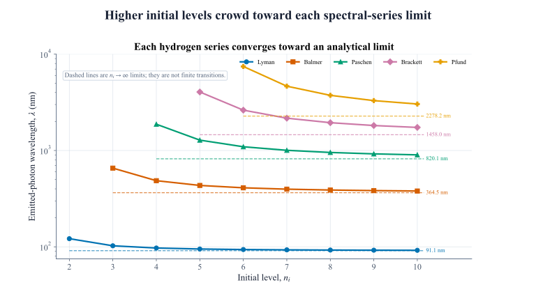
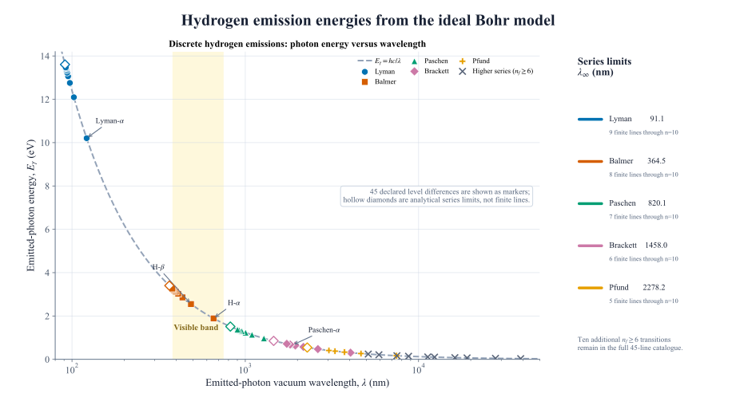
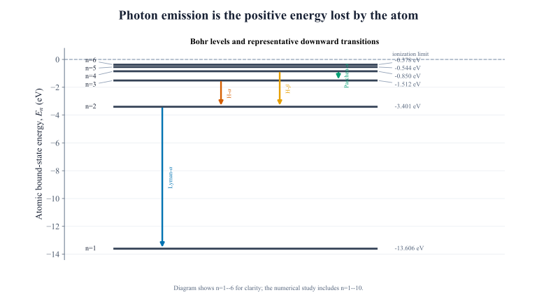
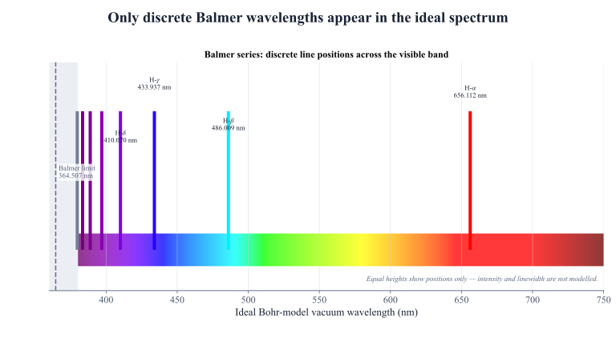

En = − ER n²
ER = hcR∞ = 13.605693 eV. Every finite bound-state energy is negative and approaches 0 from below.Hydrogen emission atlas
The atom chooses only certain notes.
Ten ideal Bohr levels create forty-five allowed energy differences. The result is not a continuous glow, but a precise catalogue of photon energies and wavelengths.
Selected emission
Loading transition catalogue
Checking evidence
Reading validated Task 5 evidence
The validated Task 5 evidence could not be loaded.
Emitted photon —
- Photon energy
- —
- Frequency
- —
- Vacuum wavelength
- —
Bohr levels
10
Downward pairs
45
Visible by convention
7
Marker colour and shape identify a series. They do not encode intensity, probability, or linewidth.
The stationary-nucleus Bohr model
Bound energy rises in unequal steps.
Integer quantum numbers select the bound states. A downward change releases the positive energy difference as one photon.Eγ = Enᵢ − En_f > 0
Eγ = hf = hc λ
1 λ = R∞ ( 1 n_f² − 1 nᵢ² )
Before
ni > nf
The atom begins in the less tightly bound, higher level.
Difference
ΔEatom = −Eγ
The atom loses energy; the emitted photon carries a positive amount.
After
λ = hc / Eγ
A larger level gap means a higher-energy, shorter-wavelength photon.
The required graph, made explorable
Forty-five emissions. One inverse law.
Every marker is a discrete integer-level difference. The restrained Eγ = hc/λ curve is a photon guide—not a continuous hydrogen emission spectrum.Preparing validated catalogue
The validated emission catalogue could not be loaded.
The horizontal axis is logarithmic in the full catalogue so ultraviolet, visible, and infrared transitions remain legible together. Hollow diamonds mark analytical series limits, not extra finite transitions.
- Selected emission
- —
- Series
- —
- Eγ
- —
- λ
- —
The declared 380–750 nm window
Seven lines enter the visible room.
All seven visible transitions in this finite catalogue belong to the Balmer series. Equal line heights show wavelength position only—never intensity.The 10→2 line is 379.695 nm and lies just below the declared boundary. Human visual sensitivity has no perfectly sharp edge; 380 nm is the explicit plotting convention used here.
Series convergence
Higher levels crowd toward exact limits.
For fixed nf, increasing ni raises photon energy and shortens wavelength toward an analytical boundary that no finite transition crosses.
Accepted numerical evidence
Every line is generated. Every identity is checked.
An independent Decimal and Rydberg reference path verifies the levels, transition energies, wavelengths, frequencies, named lines, series limits, ordering, labels, and spectral classification. All 30/30 independent checks pass.
Independent checks
—
Loading validation report
Finite transitions
—
All unique pairs through n = 10
Largest normalized error
—
Fraction of its declared tolerance
Required graph
3840 × 2160
300-DPI PNG plus editable SVG



Evidence verification pending The page remains locked until all committed Task 5 evidence agrees.
{kind=link}
Extension decision
Accuracy before decorative motion.
A classical “electron orbit” animation was intentionally deferred. The Bohr equation specifies stationary energy eigenvalues, not a time-resolved planetary path between circles.
Included here
Validated level differences, discrete emission markers, vacuum wavelengths, exact series limits, and a wavelength-position-only Balmer window.
Not implied
Equal line strength, line width, transition probability, selection-rule completeness, a literal electron trajectory, or agreement with precision spectroscopy.
Preferred future extension
A separately validated ideal-versus-reduced-mass wavelength comparison, kept visually and conceptually outside this accepted stationary-nucleus baseline.